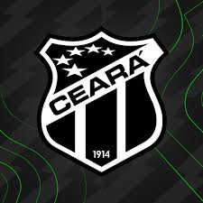
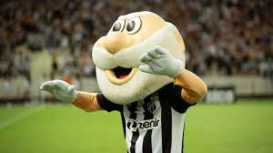

Ceará Sporting Club
O Ceará Sporting Club, fundado em 2 de junho de 1914 em Fortaleza, capital do Ceará, é um dos clubes de futebol mais tradicionais e importantes do estado nordestino. Sua casa é a Arena Castelão, um dos maiores estádios do Brasil, com capacidade para mais de 60.000 espectadores. Ao longo de sua história, o Ceará acumulou diversos títulos estaduais, especialmente no Campeonato Cearense, e teve participações destacadas em competições nacionais como o Campeonato Brasileiro Série A e a Copa do Brasil. O clube também protagonizou momentos memoráveis, com vitórias importantes e participações em torneios internacionais. Sua torcida, conhecida como "Alvinegra", é apaixonada e engajada, apoiando o time fervorosamente em todas as partidas, tanto em casa quanto fora.

Vovô
O mascote do Ceará Sporting Club é conhecido como o "Vovô". Representado por um avô simpático, o mascote personifica a experiência e a tradição do clube. Ele é uma figura querida pelos torcedores e está sempre presente nos eventos do clube, motivando a equipe e interagindo com os fãs. O "Vovô" é um símbolo do orgulho e da longevidade do Ceará no futebol, transmitindo uma sensação de respeito e admiração pela história e pela trajetória do clube ao longo dos anos.
Blusa
A camisa do Ceará Sporting Club, conhecida como "manto alvinegro", reflete a tradição e identidade do clube. Geralmente, é composta pelas cores preto e branco, as cores tradicionais do time. O design da camisa pode variar de temporada para temporada, com listras verticais ou horizontais sendo os padrões mais comuns. O escudo do clube é sempre exibido com destaque no peito, representando o orgulho e a história da equipe. A camisa do Ceará é muito valorizada pelos torcedores, que a usam com orgulho para demonstrar seu apoio ao clube em todas as ocasiões.